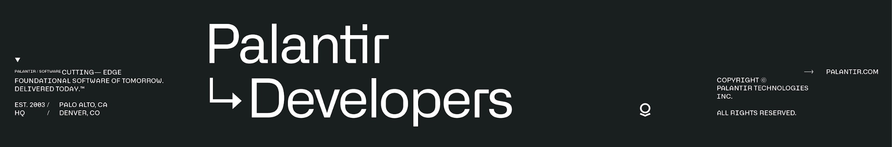

▶원본 영상 열기VIDEO THESIS
“Ontology는 조직을 구동하는 소프트웨어”
발표자는 객체·링크·액션·함수·보안을 단순 데이터 구조가 아니라 조직의 실제 움직임을 담는 운영 계층으로 설명합니다.
DevCon 5
Advanced Ontology
Landon Carter
발표의 핵심은 “AI 모델을 더 붙이는 것”이 아닙니다. 데이터·업무 규칙·권한·행동을 현실 세계의 의미 구조로 묶고, 이를 소프트웨어처럼 설계·재사용·통제해야 AI 에이전트가 안정적으로 일한다는 주장입니다.T

▶원본 영상 열기발표자는 객체·링크·액션·함수·보안을 단순 데이터 구조가 아니라 조직의 실제 움직임을 담는 운영 계층으로 설명합니다.
전사 도입보다 먼저, 중복 정의가 많고 의사결정 빈도가 높은 업무 하나를 골라 인터페이스 재사용성과 권한 통제를 검증하는 6주 파일럿이 적절합니다.
Golden tables → 운영 의사결정 → AI-first. AI는 앞단이 아니라 마지막 층입니다.
도메인 중심, 중복 제거, 확장 가능·핵심 안정, 인터페이스 기반 호환성.
업무 1개, 공통 객체·인터페이스, 보안 정책, 에이전트 연동을 단계 검증합니다.
발표는 Palantir Ontology의 여정을 세 단계로 설명합니다. 경영 관점의 핵심은 LLM을 먼저 붙여도 조직의 의미 구조와 실행 규칙이 없다면 자동화가 확장되지 않는다는 점입니다.T
여러 시스템의 데이터를 통합하고 품질을 맞춰, 조직이 공통으로 사용할 수 있는 데이터 기반을 만듭니다. 이 단계는 “무엇이 맞는 데이터인가”를 정하는 일입니다.
Actions, Logic, Functions, Models를 연결해 시스템 안에서 계산하고 의사결정을 만든 뒤, 작업 지시·일정 변경·승인처럼 현실 세계에 영향을 줍니다.
LLM과 자동화를 운영 계층 위에 올려, 앞 단계에서 정의한 객체·관계·행동을 에이전트가 이해하고 반복 실행하도록 합니다.
AI 투자 우선순위를 “모델 도입” 하나로 잡기보다, 데이터 통합 → 업무 의미 모델 → 의사결정·권한 → 에이전트의 순서로 봐야 재작업과 보안 리스크를 줄일 수 있습니다.
Palantir는 현장 배포 경험에서 정리한 네 원칙을 제시합니다. 기술 용어는 낯설지만, 임원 관점에서는 공통 기준을 만들고, 중복을 줄이며, 핵심을 보호한 채 확장하는 운영 원칙입니다.T
업스트림 데이터셋을 그대로 복사하지 말고, 고객·설비·주문·승인처럼 현실에 존재하는 객체와 관계를 기준으로 설계합니다. 그래야 사람과 AI가 같은 의미를 이해합니다.
비슷한 객체 타입이나 앱을 팀별로 반복 만들지 않고, 세 번째 반복이 보이면 공통 객체·인터페이스·워크플로로 리팩터링합니다. 이는 AI 컨텍스트도 더 짧고 명확하게 만듭니다.
검증된 핵심 인터페이스와 업무 규칙은 쉽게 깨지지 않도록 보호하되, 다른 팀이 새 객체와 워크플로를 확장할 수 있게 설계합니다.
발표의 Java 용어인 PECS는 실무적으로 “공통 인터페이스를 기준으로 생산자와 소비자를 느슨하게 연결한다”는 뜻입니다. 새 객체가 규격을 지키면 기존 앱과 함수가 재사용됩니다.
발표는 인터페이스, Struct, Reducer, Derived Property, 보안, Object-backed Link를 조합해 깊은 업무 모델을 만드는 방법을 보여줍니다. 아래는 비전공자 기준으로 번역한 핵심입니다.
Restaurant, Office Building, Arena가 모두 Building 인터페이스를 구현하면, 건물용 앱 하나가 세 유형에 공통으로 작동합니다. 새 객체도 인터페이스만 맞추면 앱 코드 변경 없이 추가할 수 있습니다.1
주소를 street·city·postal code로 흩뜨리지 않고 하나의 의미 단위로 묶습니다. main field를 지정하면 화면과 워크플로에서는 단순 값처럼 쓰면서, 필요할 때 생성자·시점·출처를 펼쳐 볼 수 있습니다.T2
여러 주소·상태·검사 기록을 배열로 유지하면서, 가장 최근 값이나 최고·최저 값을 대표로 보여줍니다. 데이터 자체를 지우지 않고 읽기 방식을 단순화합니다.3
조직도에서 팀원 이름 목록과 인원 수를 별도 저장하지 않고, 연결된 Worker 객체를 따라가 실시간 계산합니다. 중복 저장으로 생기는 불일치를 줄이고 보안 컨텍스트를 유지합니다.4
객체 인스턴스와 속성 값에 정책을 적용해 행·열·셀 수준 접근을 통합 관리할 수 있습니다. 발표는 민감한 환자 메모처럼 값 일부에 다른 권한을 주는 고급 조합도 시연합니다.T5
Employee와 Venture 사이의 “Staffing” 관계에 시작일·종료일·역할 같은 메타데이터를 담습니다. 단순 조회에서는 직접 연결처럼 보이고, 상세 업무에서는 중간 객체를 열어 필터링합니다.6
아래 흐름은 발표 내용을 제조 설비 유지보수 업무에 적용한 보고서의 예시입니다. 목표는 “새 설비 유형이 추가돼도 기존 앱과 에이전트가 계속 작동하는가”를 검증하는 것입니다.
“어떤 설비를 언제 정비할 것인가?”처럼 행동으로 이어지는 질문을 정합니다.
Equipment, Inspection, Work Order와 실제 관계를 정의합니다.
Asset·Schedulable Resource 같은 재사용 규격을 먼저 만듭니다.
Struct와 Reducer로 이력을 보존하고, Derived Property로 현재 상태를 계산합니다.
사업장·설비·속성별 접근 정책과 원본 데이터 권한을 함께 맞춥니다.
동일 Ontology를 앱과 AI가 공유하고, 새 설비 유형을 추가해 회귀 테스트합니다.
기술 기능보다 중요한 것은 운영 모델의 변화입니다. Ontology의 품질은 AI 답변 품질, 시스템 변경 비용, 보안 통제 방식, 그리고 조직 지식의 재사용성에 직접 영향을 줍니다.
비슷한 객체 타입이 12개 있고 정의가 충돌하면, 사람뿐 아니라 에이전트도 어떤 정보를 써야 할지 판단하기 어렵습니다. Canonical 모델과 인터페이스는 컨텍스트 비용을 줄이는 기반입니다.
핵심 객체·인터페이스가 여러 앱과 자동화를 구동하므로, 버전 관리·테스트·변경 승인·하위 호환성이 필요합니다. 발표가 소프트웨어 원칙을 차용하는 이유입니다.
인터페이스 기반 앱과 함수는 새 객체 유형이 생겨도 다시 만들 필요가 줄어듭니다. ROI는 객체 수가 아니라 중복 워크플로 감소와 변경 대응 속도로 측정해야 합니다.
누가 어떤 환자·설비·속성을 볼 수 있는지 Ontology 객체와 속성 수준에서 표현할 수 있습니다. 다만 원본 데이터와 외부 리소스 권한까지 함께 정합성을 맞춰야 합니다.
발표는 기능 깊이와 설계 철학을 설명하지만, 정량 ROI·도입 기간·조직 비용은 제시하지 않습니다. 또한 일부 기능은 공식 문서상 Beta입니다. 따라서 아래 오해를 피해야 합니다.
파일럿 대상은 여러 데이터 소스가 얽히고, 같은 보고·의사결정 로직을 팀별로 반복하며, 권한 차이가 있는 업무가 적합합니다. 예: 설비 정비, 공급망 예외 처리, 고객 승인, 프로젝트 인력 배치.
결과가 실제 승인·일정·작업 지시로 이어지는 질문을 고릅니다.
현업 Product Owner, Ontology Architect, Security Reviewer를 지정합니다.
현재 중복 정의, 변경 소요, 오류, 승인 시간, 권한 예외를 기록합니다.
권한 누출, 원본 추적 불가, 앱 회귀 오류가 발생하면 확장을 중단합니다.
업무 질문, 사용자, 현재 시스템, 성공 기준을 확정합니다.
현실 객체·링크·액션과 Canonical 용어를 정의합니다.
공통 규격을 만들고 기존 중복 워크플로를 하나로 묶습니다.
Struct, Reducer/Derived Property 적합성, 권한 정책을 검증합니다.
동일 Ontology를 사용해 실제 질의와 행동을 수행합니다.
새 객체 유형을 추가하고 앱 변경량·정확성·권한·사용자 시간을 비교합니다.
6주 제한 파일럿은 승인하되, 전사 확대는 재사용성·변경 내성·권한 정확성·사용자 성과가 기준선을 개선했다는 결과를 확인한 뒤 결정합니다.
아래 구간은 전사 타임코드를 기준으로 정리했습니다. 세부 기능은 제품 버전과 등록 환경에 따라 달라질 수 있으므로 공식 문서와 함께 확인하십시오.